.png)
Farmable blocks will spawn either new blocks or yield new items, when mined. All farmable blocks have to be on top of another certain kind of block to grow. Some farmable blocks also need light. The “Maximum profit” column shows the maximum possible outcome a single block will yield, including itself. Please notice: Light level 13 on a farmable crop cannot be achieved at night!
Saplings are a group of blocks which grow into trees. They are dropped by leaf-type blocks with a chance of 1 in 20 for each leaf block. The sapling drop “replaces” the leaf block drop—you do not get the leaf block if you get a sapling.
All saplings can be can be placed on any block.
Growth
Saplings will, provided they are under sunlight and are on placed on any dirt or another block that supports growth, will grow into trees after a while. They instantly go from sapling to full tree, there are no intermediate growth stages.
Specifically, all saplings only grow on the following blocks:
Types
There are different saplings, each sapling grows into a different tree.
| Block | Grows on | Needs light? | Drops | Stages |
|---|---|---|---|---|
| 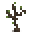 Sapling | Dirt, Dirt with Grass, Dirt with Grass and Footsteps, Dirt with Dry Grass, Dirt with Snow, Soil, Wet Soil, Desert Sand Soil, Wet Desert Sand Soil | No | 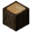 Trees, Leaves and Apples | 2 |
| 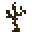 Jungle Sapling | Dirt, Dirt with Grass, Dirt with Grass and Footsteps, Dirt with Dry Grass, Dirt with Snow, Soil, Wet Soil, Desert Sand Soil, Wet Desert Sand Soil | No | 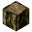 Jungle Trees and 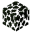 Jungle Leaves | 2 |
| 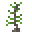 Acacia Sapling | Dirt, Dirt with Grass, Dirt with Grass and Footsteps, Dirt with Dry Grass, Dirt with Snow, Soil, Wet Soil, Desert Sand Soil, Wet Desert Sand Soil | No | Acacia Trees and Acacia Leaves | 2 |
| 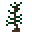 Pine Sapling | Dirt, Dirt with Grass, Dirt with Grass and Footsteps, Dirt with Dry Grass, Dirt with Snow, Soil, Wet Soil, Desert Sand Soil, Wet Desert Sand Soil | No | Pine Trees and Pine Needles | 2 |
| 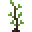 Aspen Sapling | Dirt, Dirt with Grass, Dirt with Grass and Footsteps, Dirt with Dry Grass, Dirt with Snow, Soil, Wet Soil, Desert Sand Soil, Wet Desert Sand Soil | No | Aspen Trees and 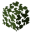 Aspen Leaves | 2 |
| Cactus | Any kind of sand | No | Cacti | 4 |
| 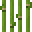 Papyrus | Dirt, Dirt with Grass. (Water must be to 3 blocks away) | No | Papyri | 4 |
| Group:flora | Dirt with Grass | Yes, 13 or higher | Flora blocks of the same kind | 1 |
| Group:flora | Desert Sand | No | 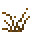 Dry Shrub | 1 |
Plants and their Products
Utensils
Other
| Plant | Name | Stages | Item | Itemstring |
|---|---|---|---|---|
| 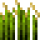 | Barley | 7 | 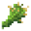 | farming:barley |
| Beans (green) | 5 | 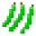 | farming:beans | |
| 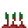 | Beetroot | 5 | 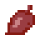 | farming:beetroot |
| 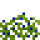 | Blueberries | 4 | farming:blueberry | |
| 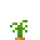 | Carrot | 8 | 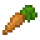 | farming:carrot |
| Chili | 8 | farming:chili | ||
| Cocoa | 4 | 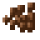 | farming:cocoa | |
| 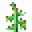 | Coffee | 5 | 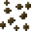 | farming:coffee |
| 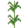 | Corn | 8 | 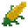 | farming:corn |
| 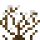 | Cotton | 8 | farming:cotton | |
| Cucumber | 4 | 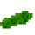 | farming:cucumber | |
| 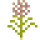 | Garlic | 5 | farming:garlic | |
| 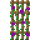 | Grapes | 8 | 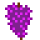 | farming:grapes |
| 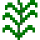 | Hemp | 8 | farming:hemp | |
| 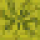 | Melon | 8 | |
farming:melon |
| 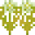 | Onion | 5 | farming:onion | |
| 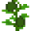 | Pepper | 5 | 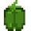 | farming:pepper |
| 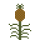 | Pineapple | 8 | 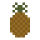 | farming:pineapple |
| Potato | 4 | 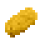 | farming:potato | |
| Peas | 5 | farming:peas | ||
| 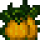 | Pumpkin | 8 | 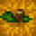 | farming:pumpkin |
| Raspberries | 4 | 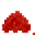 | farming:raspberry | |
| 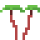 | Rhubarb | 3 | farming:rhubarb | |
| 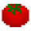 | Tomato | 8 | farming:tomato | |
| 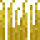 | Wheat | 8 | 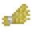 | farming:wheat |